Dashboard Screenshots¶
These screenshots are generated from two review sources:
- the deterministic demo database used by
make docs-screenshots, which covers the main dashboard routes without private data or hand-picked local state; - a production-clone capture from Apache Arrow series data, used as an open-source example of a real series browsing workflow.
The PNGs and evidence JSON are generated artifacts. They are not committed to
the main development branch. The current reviewed image set lives on the orphan
docs-screenshots branch under latest/; CI also uploads the same deterministic
dashboard captures as a conbench-dashboard-screenshots artifact for each run.
The GitHub Pages workflow restores the orphan-branch assets before running
Zensical so the published docs contain real image files without bloating this
branch history.
Refresh the deterministic dashboard captures from a clean checkout with:
The Docker-based screenshot target starts docker-compose.server.yml plus
docker-compose.docs-screenshots.yml under an isolated Compose project,
initializes the schema, seeds demo benchmark data, runs the server in read-only
product mode, captures the browser views from a pinned Playwright container,
writes ignored files under docs/site/assets/screenshots/ by default, writes
dashboard-screenshots-evidence.json, verifies the generated artifact
directory, and tears the stack down. The expected screenshot inventory and
viewport sizes live in web/docs-screenshots/screenshots.json.
make docs-screenshots-check always verifies the manifest, this page, the
Playwright pin, and evidence-checking code. When
CONBENCH_DOCS_SCREENSHOT_OUT_DIR is set, or when local screenshot assets exist
under docs/site/assets/screenshots/, it also verifies every checked PNG,
viewport dimension, nonblank image check, and evidence digest. Before capture,
the target server's /api/auth/capabilities response must show
auth_disabled=false and can_write_results=false; docs screenshots represent
the public read-only product, not a local write-enabled review mode. For the
server configuration, that means CONBENCH_AUTH_DISABLED=false.
Local Docker service origins are normalized to https://conbench.example
unless CONBENCH_DOCS_SCREENSHOT_PUBLIC_BASE_URL is set. The Playwright version
in the Docker image is checked against the exact @playwright/test pin in
web/package.json. The deterministic harness does not connect to production
data.
CI runs the same capture path, checks the generated artifact directory before
upload, and on push publishes the latest deterministic dashboard PNGs plus
dashboard-screenshots-evidence.json to the orphan docs-screenshots branch.
That publish step preserves non-dashboard extras already present on the branch,
including production-clone screenshots.
The Playwright capture test also checks the page state before it writes an image:
- chart canvases must be painted, not blank;
- desktop pages must not produce document-level horizontal overflow;
- mobile primary navigation must remain visible within the viewport;
- volatile generated result IDs are normalized out of generated dashboard screenshots;
- internal screenshot-server origins must not appear in the page text;
- checked PNGs must contain real rendered content, not a single flat color.
Those checks are intentionally lightweight. They do not replace product review, but they make the documentation screenshots reproducible evidence of the current UI instead of hand-picked local captures.
Evidence Inventory¶
| View | Route captured | What this screenshot proves |
|---|---|---|
| Recent runs | / |
Start from recent run activity and jump into CI, result, or series workflows. |
| Series browse | /series?q=demo-benchmark |
Browse benchmark families, filters, status, and production-shaped identifiers. |
| Trend detail | /series/:fingerprint?range=all |
Inspect history, charted trends, and sample rows for one series. |
| Result detail | /results/:id |
Inspect one benchmark result, measurement, metadata, and read-only actions. |
| Results list | /results?run_id=... |
Browse submitted benchmark results, filter by run or batch, and jump into detail or trends. |
| Run detail | /runs/:run_id |
Inspect one run_id, its result rows, CI report link, batches, and series links. |
| Batch detail | /batches/:batch_id |
Inspect one batch_id across runs, CI reports, result rows, and series links. |
| Compare | /compare?baseline=:id&contender=:id |
Compare two results with pairwise and lookback diagnostics. |
| CI report | /ci/report?repository=...&commit_sha=...&run_ids=... |
Review PR/CI regression status, filters, investigation queue, and row verdicts. |
| Account | /account |
Reach session identity, login, API token management, and alert-rule management surfaces. |
Production-Clone Series¶
This image is captured from the production-clone server against Apache Arrow benchmark data. It is separate from the deterministic CI harness because the clone data is only a temporary review source while this branch is prepared.
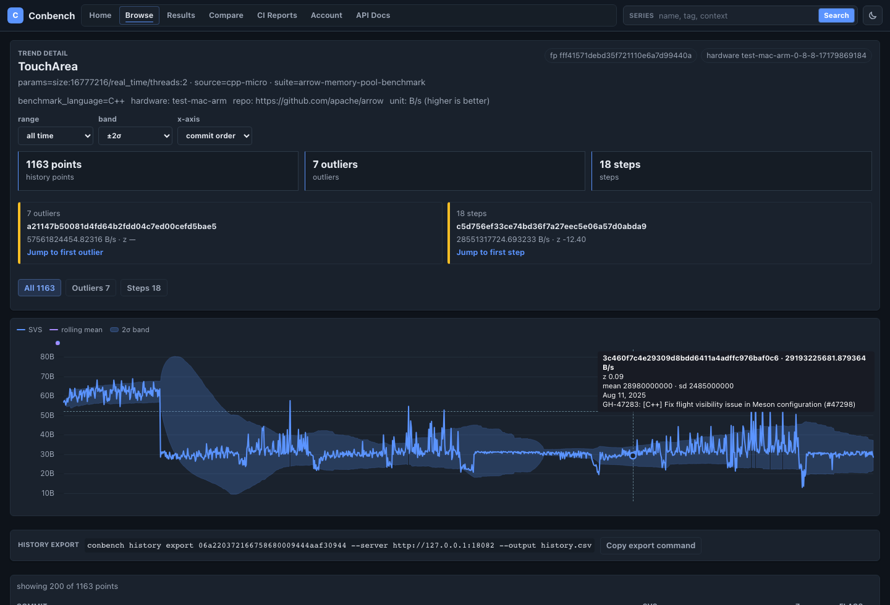
Recent Runs¶
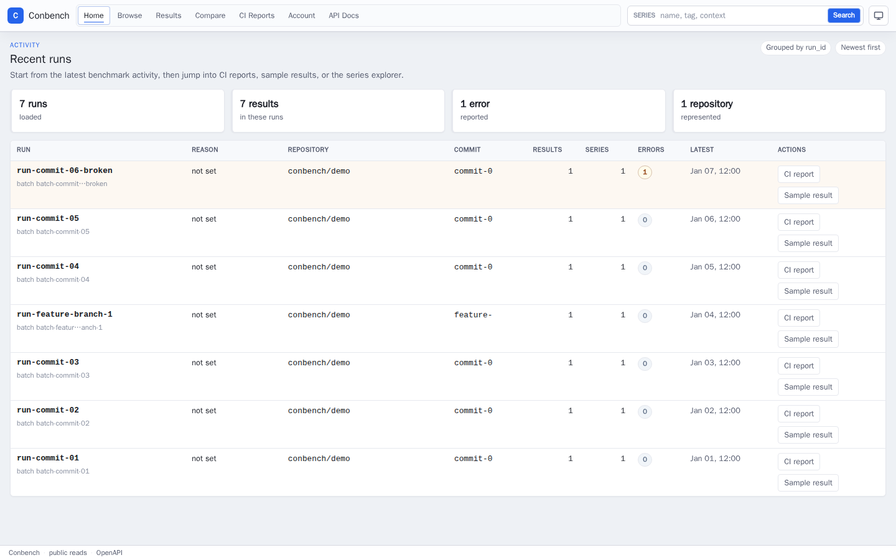
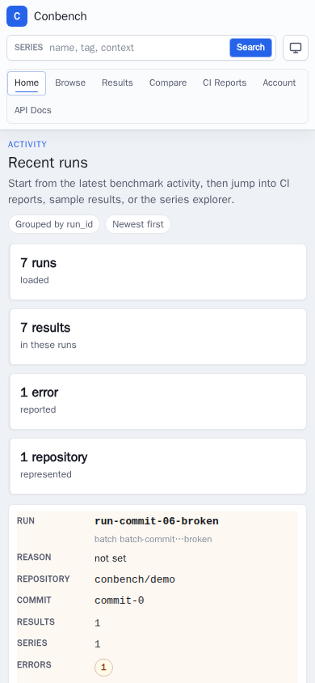
Series Browse¶
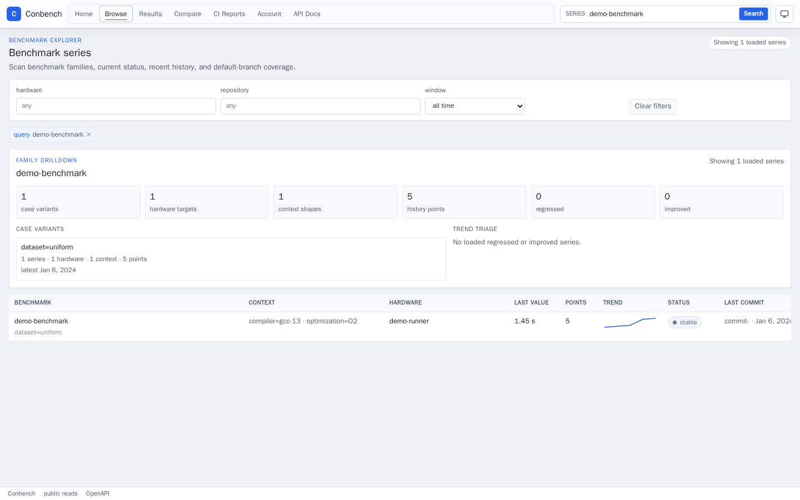
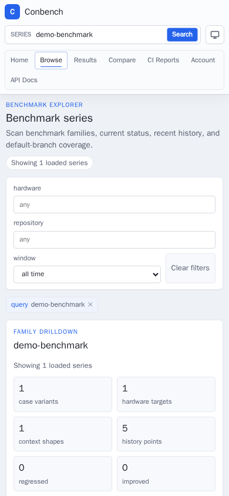
Trend Detail¶
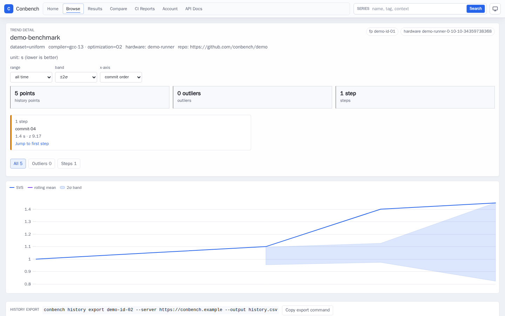
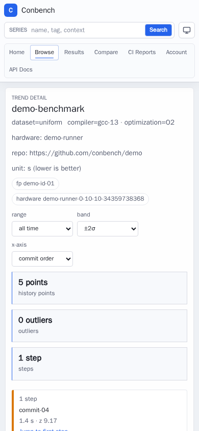
Result Detail¶
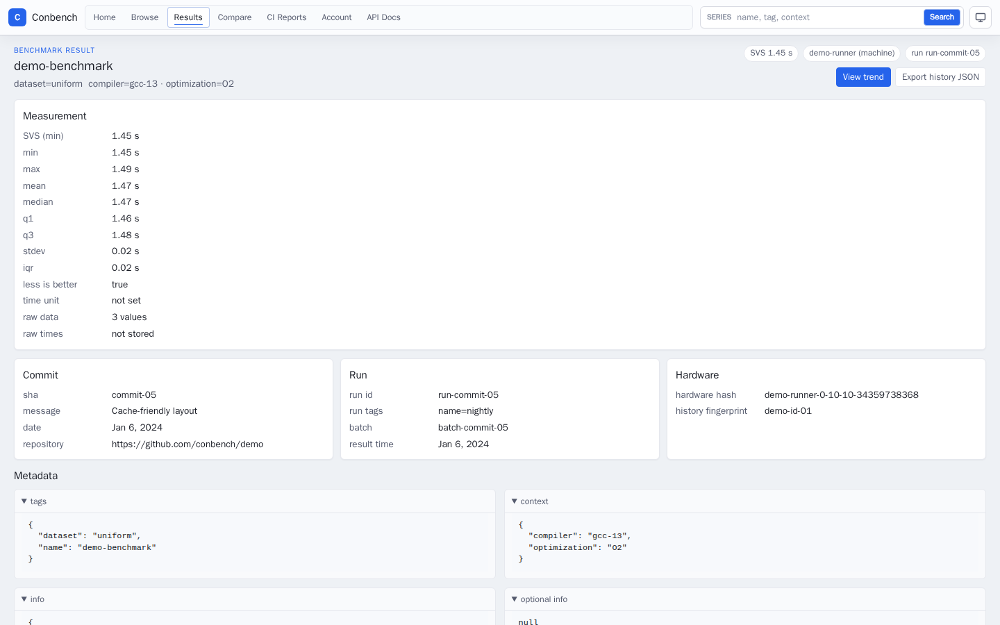
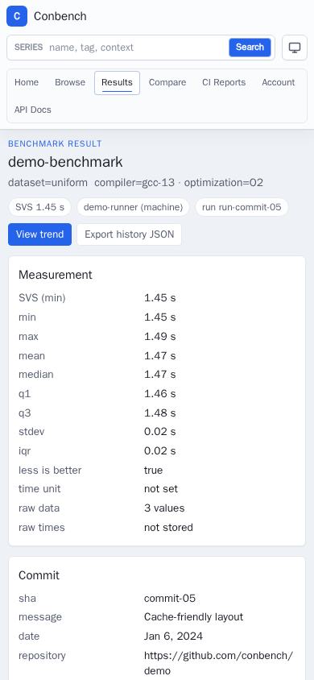
Results List¶
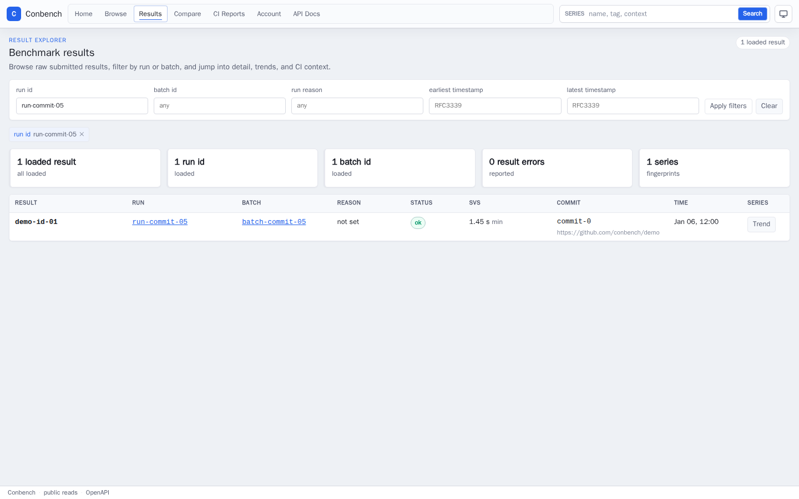
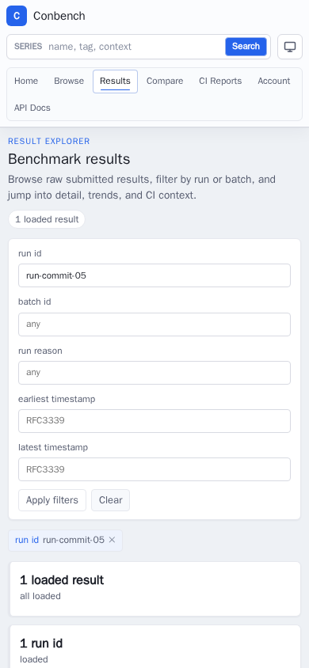
Run Detail¶
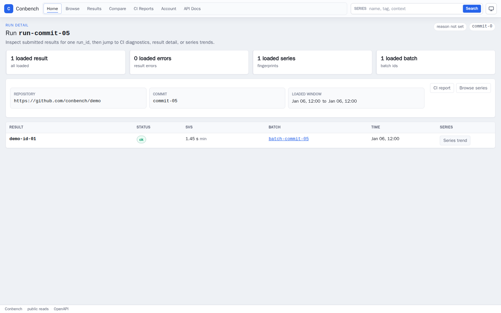
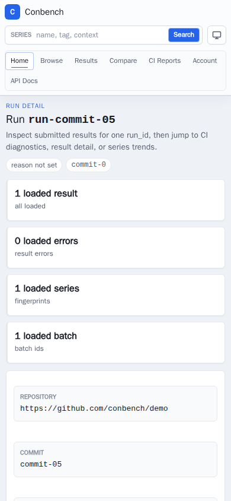
Batch Detail¶
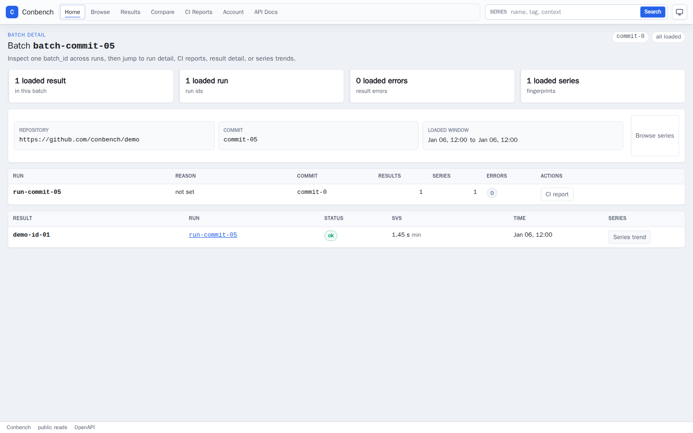
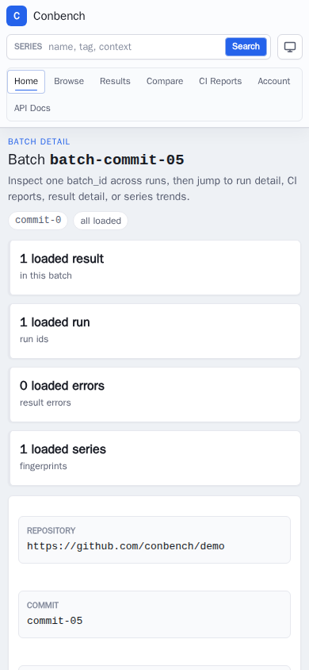
Compare¶
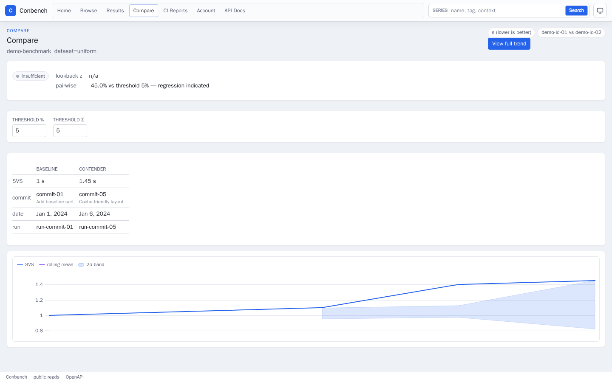
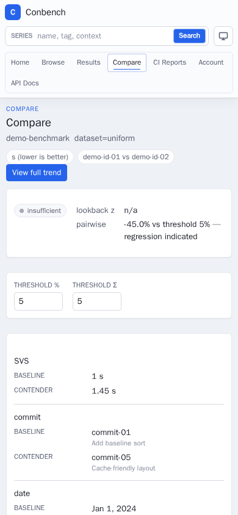
CI Report¶
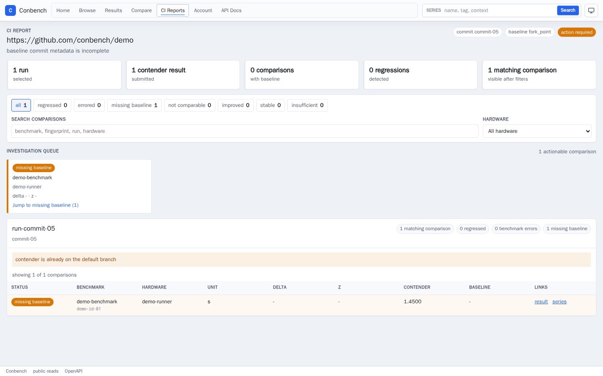
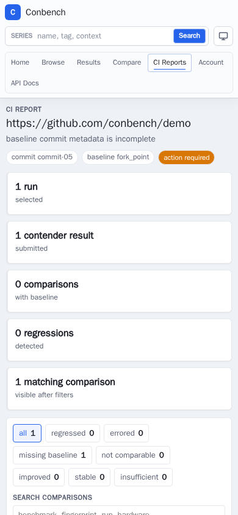
Account¶
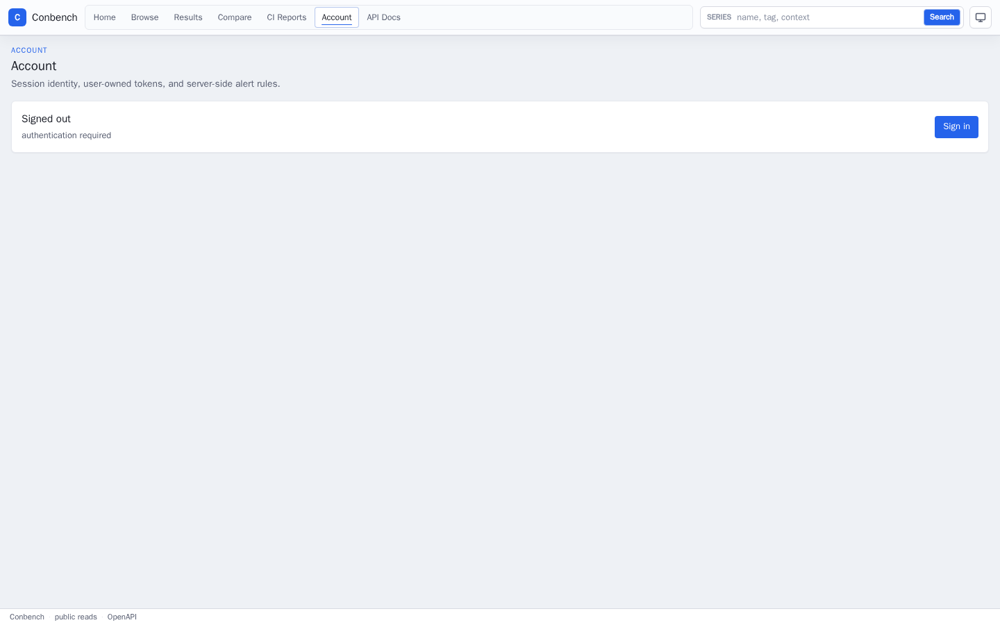
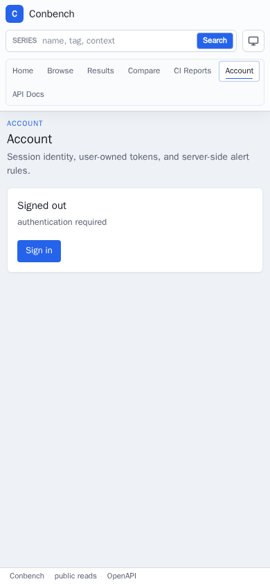